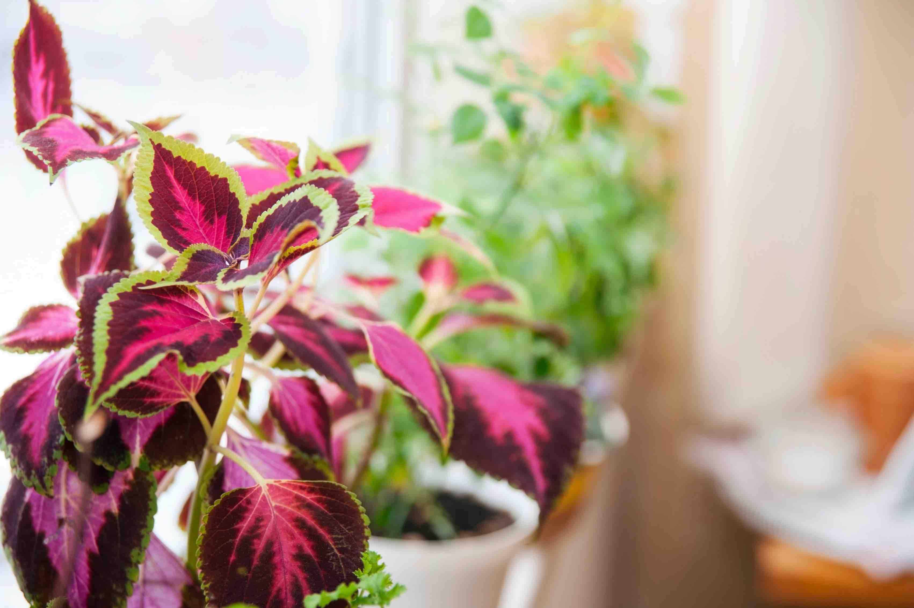

Prefers bright, indirect light but can tolerate partial shade. Too much direct sunlight can cause the colors to fade, while too little light can result in leggy growth. A spot with morning sun and afternoon shade is ideal.
Keep the soil consistently moist but not waterlogged. Water the plant when the top inch of soil feels dry. Avoid letting the plant sit in water, as this can lead to root rot. During the growing season, coleus may need more frequent watering.
Use a well-draining potting mix rich in organic matter. Thrives in slightly acidic to neutral soil (pH 6.0-7.0). Adding compost or peat moss to the soil can improve its moisture retention and nutrient content.
Prefers warm temperatures between 60°F and 75°F (15°C to 24°C). It is sensitive to cold and should be protected from temperatures below 50°F (10°C). High humidity levels help the plant thrive, especially in indoor environments.
Known for its vibrant, multicolored foliage, is a popular plant among gardeners and houseplant enthusiasts. Native to Southeast Asia and Malaysia, this plant is cherished for its stunning leaf patterns and ease of care.
Feed with a balanced, water-soluble fertilizer every 4-6 weeks during the growing season (spring and summer). Avoid over-fertilizing, as this can lead to excessive leaf growth at the expense of vibrant coloration.
Regularly pinch back the tips of the stems to encourage bushier growth and prevent the plant from becoming leggy. Remove any flower spikes that appear to direct the plant's energy towards foliage production. Repot every 1-2 years to refresh the soil and accommodate growth.
Known for their vibrant, variegated leaves that come in a wide array of colors, including red, yellow, pink, green, and purple. The leaves are often scalloped or fringed, adding to their decorative appeal. Can vary in size, with some varieties remaining compact while others grow tall and bushy.
Coleus, Painted Nettle, Flame Nettle, Poor Man’s Croton, Painted Leaf
Order: Lamiales | Family: Lamiaceae | Genus: Plectranthus | Species: Plectranthus Scutellarioides
1. Plectranthus scutellarioides ‘Wizard Mix’:
- Features a mix of colors, including red, yellow, and green.
- Ideal for garden beds and containers.
2. Plectranthus scutellarioides ‘Kong Red’:
- Large, red leaves with green edges.
- Perfect for shady garden spots.
3. Plectranthus scutellarioides ‘Black Dragon’:
- Deep burgundy leaves with ruffled edges.
- Adds dramatic contrast to garden designs.
4. Plectranthus scutellarioides ‘Fairway Mosaic’:
- Brightly colored leaves with a mosaic pattern.
- Great for adding visual interest to any garden.